Ders 12
Zincirleme Kanunu hatırlayalım
$$ \frac{dw}{dt} = w_x \frac{dx}{dt} + w_y \frac{dy}{dt} + w_z \frac{dz}{dt} $$
Bu formül, kısmi türevler üzerinden, $w$'daki değişimin $x,y,z$'deki değişime ne kadar "hassas" ne kadar "bağlı" olduğnu gösteriyor.
Şimdi üsttekini daha azaltılmış, özetli (compact, concise) bir formda şöyle yazacağım.
$$ = \nabla w \cdot \frac{d\vec{r}}{dt} $$
Gradyan vektörü tüm kısmi türevlerin bir araya konmuş halidir.
$$ \nabla w = < w_x, w_y, w_z > $$
Tabii ki bunu söyleyince üstteki gradyan'ın $x,y,z$'ye bağlı olduğunu da söylüyoruz, mesela $w$'nun belli bir nokta $x,y,z$'da gradyanını alabilirsiniz, o zaman her değişik $x,y,z$ noktasında farklı bir vektör elde edersiniz, ki bu vektörlerin tamamına ileride "vektör alanı (vector field)" ismini vereceğiz. Devam edelim,
$$ \frac{d\vec{r}}{dt} = < \frac{dx}{dt}, \frac{dy}{dt}, \frac{dz}{dt} > $$
Yani hız vektörü (velocity vector) $d\vec{r}/{dt}$ yukarıdaki gibi tanımlıdır.
Bugünkü amacımız gradyan vektörünü anlamak, ve nerelerde kullanabileceğimizi incelemek. Gradyanları yaklaşıksal formüllerde kullanmak mümkündür, vs. Üstte gördüğümüz onun notasyonu.
Gradyanların belki de en "havalı" özellikleri şudur.
Teori
İddia ediyorum ki $\nabla w$ vektörü, $w = \textrm{ bir sabit }$ile elde edilecek kesit yüzeyine (level surface) her zaman diktir.
Eğer fonksiyonumun bir kontur grafiğini çizersem
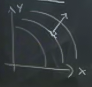
gösterilen noktada hesaplanacak gradyan vektörü o noktadaki kontura diktir.
Örnek 1
Lineer bir $w$ kullanalım.
$$ w = a_1 x + a_2 y + a_3 z $$
Gradyan nedir? Kısmi türevleri alalım:
$$ \nabla w = < a_1, a_2, a_3 > $$
Konturları nasıl elde ederim? $a_1 x + a_2 y + a_3 z = c$ ki $c$ bir sabittir, bu formülü tatmin eden tüm $x,y,z$ değerleri bir düzlem oluştururlar.
Bu düzlemin normalinin nasıl alınacağını biliyoruz, katsayılara bakarız, $< a_1,a_2,a_3 >$. Bu vektörün gradyanla aynı çıktığına dikkat, ki normal vektör de düzleme diktir zaten. Aynı çıkmaları mantıklı.
Aslında bu örnek gradyanın dikliğini bir anlamda ispatlıyor, çünkü düzlem olmasa bile herhangi bir fonksiyonun birinci yaklaşıksallığı bir düzlem yaratır, o düzlemin normalı, gradyanı eşitliği bizi yine gradyanın dikliğine götürür. Ama bu yeterince ikna edici olmadıysa başka bir örneğe bakabiliriz.
Örnek 2
$$ w = x^2 + y^2 $$
Bu fonksiyonun kesit seviyeleri, değişik yarıçaplara sahip dairelerdir, $x^2 + y^2 = c$ formülündeki değişik $c$ değerleri bu daireleri tanımlar.
Gradyan vektörü
$$ \nabla w = <2x, 2y> $$
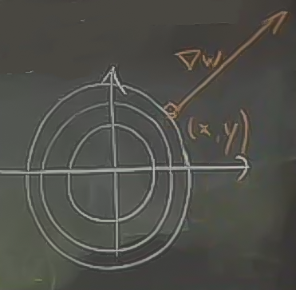
Seçilen $x,y$ noktasında $\nabla w$ gösterilmiş. Bu vektörün $x$ ve $y$ eksenlerinde boyunun, başladığı noktaya göre olan $x,y$ değerlerinin yaklaşık iki katı olduğuna dikkat, ki bu da $< 2x,2y >$ vektörü ile uyumlu.
Şimdi gradyanın niye kesit eğrilerine hep dik olduğunu ispatlayalım.
İspat
Önce kesit eğrileri "üzerinde" hareket eden bir nokta hayal edeceğiz. Bu nokta fonksiyonun sabit olduğu yerlerden geçiyor demektir, çünkü kontur üzerinde fonksiyon değeri hep aynıdır.
Eğri $\vec{r} = \vec{r}(t)$ hep $w = c$ üzerinde olacak. Resme bakalım, hayali bir kesit yüzeyi üzerinde bir eğri bu (kırmızı renkli) ve bu eğrinin üzerinde giden noktanın bir hızı olacak. Bu arada $w$ mesela $w = x^2 + y^2$ belki, herhangi bir üç boyutlu fonksiyon. $\vec{r}$'nin $w$ üstünde gitmesi demek, $\vec{r}$ ile $w$ parametrize edilebilir demek, $\vec{r}(t) = < x(t),y(t),z(t) >$ ve onu kullanarak $w(\vec{r}(t)) = c$.
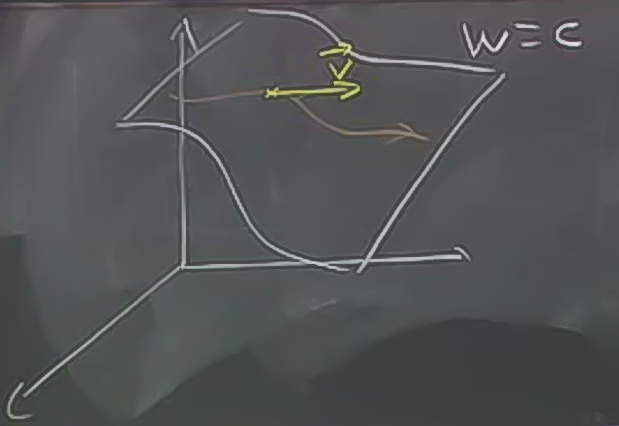
İddia o ki,
$$ \vec{v} = \frac{d\vec{r}}{dt} $$
vektörü, kesit $w = c$'ye muhakkak teğet olmalı, çünkü hız eğriye teğet, ve eğri kesit içinde. Bu arada $w$'nin aslında $w(\vec{r}(t))$ olduğunu belirttik.
Bu sayede Zincirleme Kanununu kullanarak
$$ \frac{dw(\vec{r})}{dt} = \nabla w \cdot \frac{d\vec{r}}{dt} = \frac{dc}{dt}$$
eşitliğini kurabiliriz. Noktasal çarpım nereden geldi? Bu ifade $w$'nin her kısmi türevinin alıp, ona tekabül eden $\vec{r}(t)$ öğesinin türevi ile çarpıp sonuçların toplanması demek. Sonuç Zincirleme Kanunu'ndaki görüntü olacaktır. Ayrıca
$$ = \nabla w \cdot \vec{v} = 0$$
Sıfıra eşitliğin sebebi $w = c$ olması ve sabitin türevi $dc/dt$ sıfır oldu.
Şimdi sıfır sonucundan ters yöne gidelim: iki vektörün noktasal çarpımı ne zaman sıfır sonucu verir? Eğer vektörler birbirine dik ise. Demek ki $\nabla w \perp \vec{v}$.
Hatta iddia ediyorum ki bu diklik $w=c$ üzerindeki her hareket (motion) için geçerlidir. Yani $\vec{v}$, kesit yüzeyine teğet olan herhangi bir vektör olabilir, üstteki diklik hep doğru olacaktır.
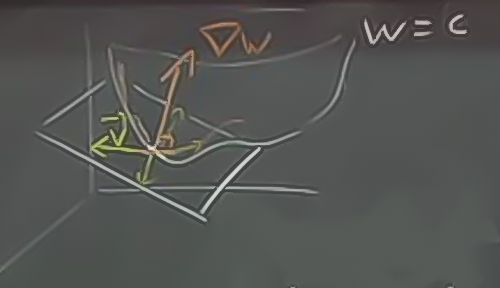
Bunun güzel bir uygulaması şu, artık istediğimiz her şeyin teğet düzlemini bulabiliriz.
Örnek
Yüzey $x^2 + y^2 - z^2 = 4$'un $(2,1,1)$ noktasındaki teğet düzlemini bul. Alttaki şekil bir hiperboloid (hyperboloid) ve bu dersin altında grafiklemek için gereken kodlar var.
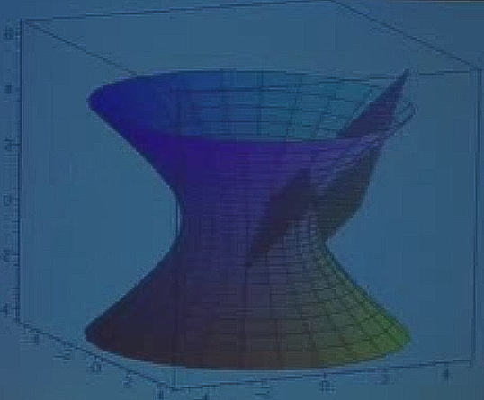
Resimde teğet düzlem pek teğet gibi değil, diğer grafiğin içine girmiş gibi duruyor, fakat problemin verdiği noktada düzlem teğet.
Bu düzlemi nasıl bulacağız? Gradyanı hesaplayarak.
Kesit seviyesi $w=4$ ve Yüzey $w = x^2 + y^2 - z^2$.
$$ \nabla w = <2x, 2y, -2z> $$
Verilen nokta değerlerini bu gradyan vektörüne verirsek, sonuç $< 4,2,-2 >$. Bu sonuç yüzeye ya da teğet düzleme normal (dik) olan vektörü verecek.
Bu normal vektörü kullanarak düzlemin formülünü bulabiliriz.
$$ 4x + 2y - 2z = ? $$
Soru işareti ne olur? $(2,1,1)$ noktasını formüle koyarsak, sonuç 8 çıkar.
$$ 4x + 2y - 2z = 8 $$
Alternatif Yöntem
Aslında tüm bunları gradyan olmadan da yapabilirdik, bir diferansiyel ile ise başlayabilirdik
$$ dw = 2x dx + 2y dy -2z dz $$
$(2,1,1)$ noktasında
$$ = 4dx + 4dy - 2dz $$
Yaklaşıksal olarak
$$ \Delta w \approx 4 \Delta x + 2\Delta y - 2\Delta z $$
Ne zaman kesit yüzeyi, kontur üzerindeyiz? Eğer $w$'de hiç değişim yok ise, yani $\Delta w = 0$ ise. Bu arada üstteki yaklaşıksallığın bir lineer yaklaşıksallık olduğunu unutmayalım. $(2,1,1)$ noktasında bu teğeti kullanmak istersek, $\Delta w = 0$ eşitliği bize $4 \Delta x + 2\Delta y - 2\Delta z $ teğet düzlemini verecektir. Nasıl? $\Delta x$ değişimdir, teğet düzlem üzerinde değişimi tanımlamak istiyorsak, $(2,1,1)$'den başlayarak bir yere gittiğimizi düşünmemiz gerekir, ki mesela $x-2$ değişimini yapabiliriz, vs. Tam formül
$$ 4(x-2) + 2(y-1) - 2(z-1) = 0 $$
Yönsel Türevler (Directional Derivatives)
Elimdeki bir $w = w(x,y)$ formülünün kısmi türevini aldığım zaman $\partial w/\partial x$, $\partial w/\partial y$ ile mesela, bu türevler x-ekseni ya da y-ekseni yönünde değişim olduğu zaman $w$'nun nasıl değiştini ölçerler. Peki başka yönlere göre, mesela bir birim vektör $\hat{u}$ yönünde türev alınamaz mı? Cevap evet. Yönsel türevler bu ise yarıyorlar.
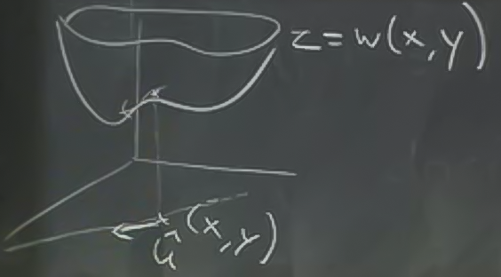
Yani $\hat{u}$ üzerinden geçen yolda ilerlerken $z$'nin nasıl değişeceğini merak ediyorum. Düz çizgi üzerindeki gidişata (straight line trajectory) bakıyoruz.
$s$ adlı bir parametreye bağlı bir pozisyon vektörü $\vec{r(s)}$ hayal edelim, öyle ki,
$$ d\vec{r}/ds = \hat{u} $$
sonucunu versin.
Niye üstte $t$ yerine $s$ kullandım? Çünkü çizgi boyunca birim hızda ilerliyorum, o zaman parametrize ettiğim şey katedilen yol. $s$ bir anlamda eğri uzunluğu (arc length), tabii tam eğri denemez çünkü çizgi düz, ama yine mesafe kavramını kullanıyoruz.
O zaman $dw/ds$ nedir? Bunu hesaplamak için Zincirleme Kanunu'nun özel bir durumunu kullanacağız.
Eğer $\hat{u} =
$$ x(s) = x_0 + as $$
$$ y(s) = y_0 + bs $$
Bu formülleri $w$'ye sokarız, sonra $dw/ds$'i hesaplarız.
Tanım: Yönsel Türev
$$ \frac{dw}{ds}_{|\hat{u}} $$
Daha önce kısmi türevleri incelerken onları geometrik olarak, x ve y eksenine paralel düzlemlerin fonksiyonu kesmesi olarak görmüştük. Yönsel türevler ise herhangi bir yöndeki (daha doğrusu $\hat{u}$ yönündeki) bir düzlemin fonksiyonu kesmesi olarak görülebilir.
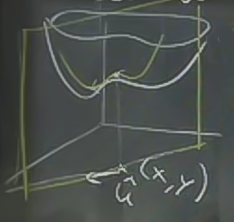
Tanım
$dw / ds_{|\hat{u}}$ = Bir grafiğin (fonksiyonun) $\hat{u}$ vektörünü içeren / ona paralel olan, ve dikey düzlem (vertical plane) kesilmesi ile elde edilen, o düzlemdeki yansımasının oluşturduğu eğrinin değişimi / eğimi (slope).
Zincirleme Kanunu uygulanırsa
$$ \frac{dw}{ds} = \nabla w \cdot \frac{d\vec{r}}{ds} = \nabla w \cdot \hat{u} $$
Hatırlamamız gereken formül o zaman
$$ \frac{dw}{ds}_{|\hat{u}} = \nabla w \cdot \hat{u} $$
Eşitliğin sağ tarafı "gradyanın $\hat{u}$ yönünde giden bileşeni, kısmı" olarak ta nitelenebilir.
Kavramların birbiriyle alakasını iyice görmek için suna bakalım
Örnek
$$ \frac{dw}{ds}_{|\hat{i}} = \nabla w \cdot \hat{i} = \frac{\partial w}{\partial x} $$
Geometrik olarak
$$ \frac{dw}{ds}_{|\hat{u}} = \nabla w \cdot \hat{u} $$
$$ = |\nabla w||\hat{u}|\cos(\theta) $$
$\hat{u}$ birim vektör olduğuna göre $|\hat{u}| = 1$, formülden atılır
$$ = |\nabla w||\cos(\theta) $$
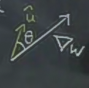
Bu ifade "gradyanın $\hat{u}$ yönündeki bileşeni" hesabının bir diğer versiyonudur aslında.
Şu soruyu soralım: hangi yöndeki değişim en büyüktür? $|\nabla w||\cos(\theta)$ ifadesinin en buyuk olduğu yer $\cos(\theta)=1$ olduğu zamandır, yani $\theta = 0$, ki bu durum $\hat{u} = dir(\nabla w)$, yani $\hat{u}$'nun gradyan ile aynı yönde olduğu zamandır.
O zaman şu yorumu da yapabiliriz, gradyan belli bir noktada fonksiyonun en çok artacağı yönü gösterir.
Peki $|\nabla w|$, yani $\nabla w$'nun büyüklüğü neye eşittir?
$$ |\nabla w| = \frac{dw}{ds}_{|\hat{u}=dir(\nabla w)} $$
En hızlı düşüş (azalış) hangi yöndedir? En fazla artışın tam tersi yönünde.
Yani min $dw/ds_{|\hat{u}}$ için $\cos(\theta) = -1$ olmalıdır, yani $\theta = 180^o$, $\hat{u}$, $-\nabla w$ yönünde olduğu zaman.
Peki şu ne zaman doğrudur?
$$ \frac{dw}{ds}_{|\hat{u}} = 0 $$
Yani fonksiyon hangi yönde değişmez?
Bunun için $\cos(\theta) = 0$ olmalıdır, ki bu $\theta = 90^0$ olduğu zamandır. Yani $\hat{u} \perp \nabla w$ ise. Bunu anlamanın bir diğer yolu, hiç değişimin olmadığı yönün kesit yüzeyine teğet olduğudur, bu yüzeyde $w$ hiç değişmediğine göre değişim olmaz, değişim yoksa, biz de teğet hareket ediyoruz demektir.
Soru 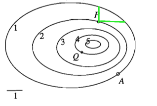 P noktasında $\partial w/ \partial x$ ve $\partial w/\partial y$'yi kabaca hesapla.
$$ \frac{\partial w}{\partial x} = \frac{dw}{ds} \bigg|_{\hat{i}} \approx \frac{\Delta w}{\Delta s} \approx \frac{-1}{5/3} = -0.6 $$
$$ \frac{\partial w}{\partial y} = \frac{dw}{ds} \bigg|_{\hat{j}} \approx \frac{\Delta w}{\Delta s} \approx \frac{-1}{1} = -1 $$
$\Delta = -1$ çünkü dik giderken kesit seviye 2'den 1'e geliyoruz, $w$ 1 azalıyor. Bu gidişat $s$'in kendi değişimi $\Delta s$, bunu da kabaca, sol alt köşedeki skalaya bakarak tahmin ediyoruz, sağa doğru yatay gidiş 1'den büyük gibi duruyor, ona 5/3 demişiz, yukarı doğru gidişat tam 1 gibi duruyor, ona 1 demişiz.
$\partial w / \partial y$ hesabında niye aşağı değil yukarı gitmişiz? Çünkü $\hat{i}$'nin yönü yukarıdır, aşağı değil.
Hiperboloid
Parametrizasyonu türetelim. Diyelim ki $x^2 + y^2 - z^2 = 1$ gibi bir paraboloid'imiz var. $x,y$'yi şöyle alalım
$$ x = r \cos u $$
$$ y = r \sin u $$
Yerine koyarsak
$$ r^2 - z^2 = 1 $$
elde ederiz. Şimdi kareleri birbirinden çıkartılınca 1 veren bir şeyler bulmak lazım. Hiperbol $\sin$ ve $\cos$ (hyperbolic sine, cosine) böyle fonksiyonlardır.
$$ \cosh^2x - \sinh^2x = 1 $$
Bu eşitliği kullanarak
$$ r = \cosh v $$
$$ z = \sinh(v) $$
Yine yerine koyalım
$$ x = \cos u \cosh v $$
$$ y = \sin u \cosh v $$
$$ z = \sinh v $$
Son formüllerimiz bunlar.
from __future__ import division
from mpl_toolkits.mplot3d import Axes3D
fig = plt.figure(figsize=plt.figaspect(1)) # Square figure
ax = fig.add_subplot(111, projection='3d')
r=1;
u=np.linspace(-2,2,200);
v=np.linspace(0,2*np.pi,60);
[u,v]=np.meshgrid(u,v);
a = 1
b = 1
c = 1
x = a*np.cosh(u)*np.cos(v)
y = b*np.cosh(u)*np.sin(v)
z = c*np.sinh(u)
ax.plot_surface(x, y, z, rstride=4, cstride=4, color='b')
plt.savefig('hyperboloid.png')
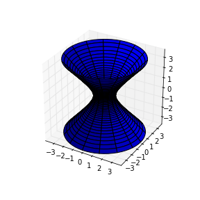
Bir diğer kod $a \cos,b \sin$ ifadelerinin toplamını gösteriyor
from pylab import *
xmax = 6.
xmin = -6.
D = 100
x = linspace(xmin, xmax, D)
a = 3
b = 1
plot(x, (a*cos(x) + b*sin(x)))
plot(x, (a*cos(x)))
plot(x, (b*sin(x)))
grid()
legend(['sum', 'cos','sin'])
plt.savefig('1h7.png')
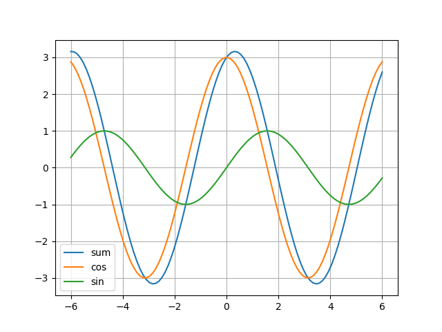
Yukarı